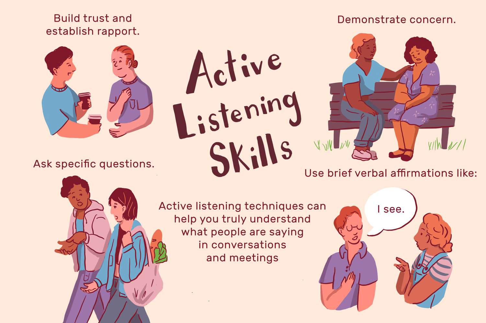

Active listening is the practice of preparing to listen, observing what verbal and non-verbal messages are being sent, and then providing appropriate feedback for the sake of showing attentiveness to the message being presented. This form of listening conveys a mutual understanding between speaker and listener. Wikipedia Founder: Carl Rogers thedecisionlab.com
